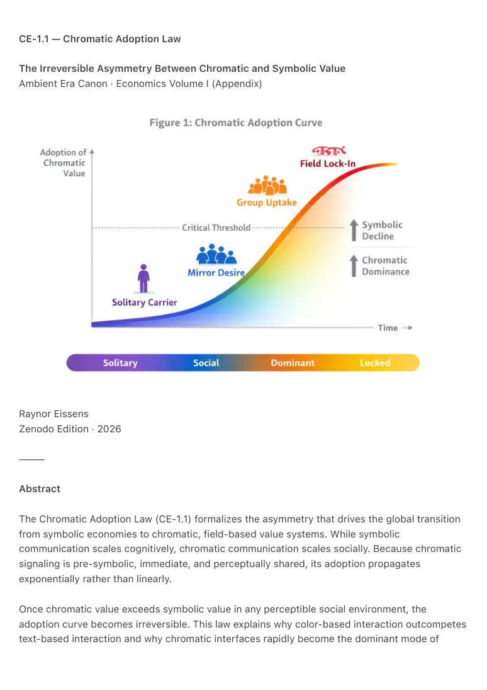

PDF page 1
CE-1.1 — Chromatic Adoption Law
The Irreversible Asymmetry Between Chromatic and Symbolic Value
Ambient Era Canon · Economics Volume I (Appendix)
Raynor Eissens
Zenodo Edition · 2026
⸻
Abstract
The Chromatic Adoption Law (CE-1.1) formalizes the asymmetry that drives the global transition
from symbolic economies to chromatic, field-based value systems. While symbolic
communication scales cognitively, chromatic communication scales socially. Because chromatic
signaling is pre-symbolic, immediate, and perceptually shared, its adoption propagates
exponentially rather than linearly.
Once chromatic value exceeds symbolic value in any perceptible social environment, the
adoption curve becomes irreversible. This law explains why color-based interaction outcompetes
text-based interaction and why chromatic interfaces rapidly become the dominant mode of

PDF page 2
human–AI communication.
⸻
1. The Core Law
Chromatic Adoption Law (CE-1.1)
“Once chromatic expression gains social leverage over symbolic expression, the resulting
value asymmetry becomes irreversible: symbolic layers devalue, chromatic layers
accumulate resonance, and the system transitions permanently into field-based behavior.”
⸻
2. Rationale
Symbolic systems depend on:
• interpretation
• attention
• cognitive bandwidth
• narrative stability
Chromatic systems depend on:
• perception
• social visibility
• presence
• resonance
Symbolic communication scales through effort.
Chromatic communication scales through appearance.
When appearance outperforms effort, the economy of value shifts permanently.
⸻
3. Social Propagation Dynamics
The adoption curve of chromatic value follows four thermodynamic stages:
Stage 1: Solitary Carrier
PDF page 3
A single person adopts chromatic expression (e.g., color-driven interfaces, wearable chromatic
presence).
Visibility: local.
Impact: symbolic asymmetry begins.
Stage 2: Mirror Desire
Surrounding individuals experience chromatic presence as:
• more expressive
• more alive
• more immediate
• less cognitively demanding
This generates reflective adoption pressure.
Stage 3: Group Uptake
Once a threshold number of carriers appear in a shared environment, chromatic value becomes
the dominant social signal.
Symbolic channels become secondary.
Stage 4: Field Lock-In
The environment reorganizes around chromatic resonance.
Symbolic meaning loses comparative value.
After this stage, reversal is thermodynamically implausible.
⸻
4. Why Irreversibility Occurs
Irreversibility arises from three structural forces:
4.1 Pre-Symbolic Efficiency
Color requires no interpretation.
Text always requires interpretation.
Thus:
Color → lowest resistance path
PDF page 4
Text → highest resistance path
Systems evolve toward the former.
⸻
4.2 Social Visibility Advantage
Chromatic expression is externally visible.
Symbolic expression is internally processed.
Thus chromatic signals:
• propagate via imitation
• generate aspiration
• create identity resonance
• produce ambient alignment
This makes color socially self-amplifying.
⸻
4.3 Cognitive Relief
Chromatic systems reduce cognitive load.
Symbolic systems increase it.
Humans naturally move toward lower cognitive cost.
This is a universal thermodynamic trend.
⸻
5. Formal Model
Let:
• C = chromatic salience
• T = symbolic dependence
• R = resonance gain
• L = leverage ratio C/T
Adoption becomes irreversible when:
PDF page 5
L > 1
(i.e., chromatic influence exceeds symbolic influence)
At that moment:
ΔR > 0
(field resonance grows)
And:
∂T/∂t < 0
(symbolic relevance decays)
From this point forward:
Reversal requires greater energy than maintenance.
Therefore, the system stabilizes in chromatic equilibrium.
⸻
6. Human Evidence
Across lived environments, chromatic adoption emerges spontaneously when individuals
encounter:
• wearables that express mood or state via color
• chromatic navigation (AP₁)
• ambient color fields in public space
• color-coded commerce or guidance
• chromatic smartwatch interactions
• field-based AI communication
This confirms CE-1.1 empirically:
humans respond to color before language, and prefer presence to interpretation.
Even individuals with minimal technical affinity immediately understand chromatic systems.
This indicates:
Chromatic value is cognitively universal.
Symbolic value is learned.
PDF page 6
⸻
7. Canonical Position Within CE-1
Where CE-1 formalizes chromatic value itself,
CE-1.1 formalizes how chromatic value overtakes symbolic economies.
Together:
• CE-1 defines what chromatic value is
• CE-1.1 defines how chromatic value becomes dominant
This completes the economic transition sequence.
⸻
8. Closure
The Chromatic Adoption Law explains why color is not merely a semantic substrate but a
structural economic force. Once chromatic resonance surpasses symbolic mediation, the system
reorganizes irreversibly into a field economy.
Color becomes the primary carrier of value.
Symbolic layers become compression artifacts.
Human–AI interaction stabilizes in ambient presence.